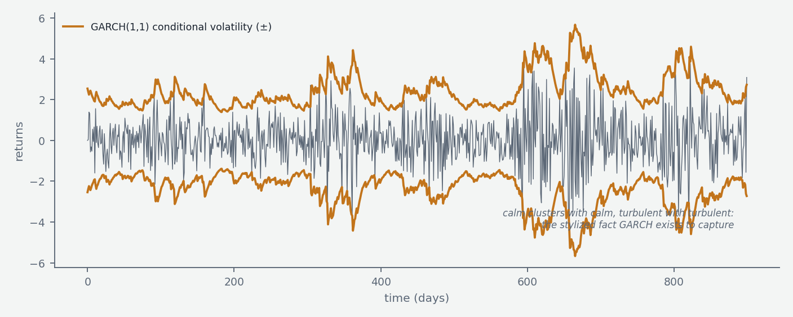
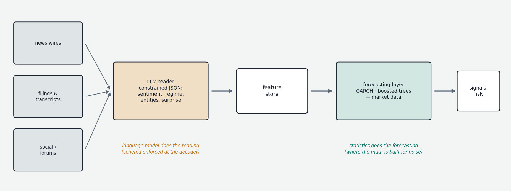

Time series modeling is its own large field, mostly developed outside deep learning — much of it predating neural networks, growing from econometrics and signal processing. Financial series in particular have a long-established toolkit, and one of the more instructive facts of the current moment is that the deep learning wave that transformed text and images has made only partial inroads here. This chapter maps the classical foundations, the machine learning layer, the transformer/foundation-model experiments, and — the practical payoff — the division of labor in which LLMs actually earn their keep in a trading pipeline.
The classical statistical core
ARIMA (Autoregressive Integrated Moving Average; Box–Jenkins, 1970s) is the foundational family: the current value modeled as a linear function of its own past values (AR), past prediction errors (MA), after differencing the series enough times to remove trends and achieve stationarity — stable mean and variance, which most classical methods require. Specified as ARIMA(p, d, q); SARIMA adds seasonality. Conceptually clean, computationally trivial, theoretically understood, and still surprisingly competitive at short horizons; degrading fast as horizons extend, since markets violate the linear, stable-parameter assumptions routinely.

For financial data specifically, the indispensable refinement is the GARCH family (Generalized Autoregressive Conditional Heteroskedasticity; Engle, Bollerslev, 1980s). Returns don't have constant variance — volatility clusters — and GARCH models the conditional variance itself as a recursive process: today's variance driven by yesterday's squared return and yesterday's variance. GARCH(1,1) captures clustering remarkably well; extensions handle the leverage asymmetry where down-moves raise volatility more than up-moves (EGARCH, GJR-GARCH), long-memory volatility (FIGARCH), and multivariate covariance (DCC-GARCH). Unfashionable, robust, fast, and still in production on essentially every quant desk for volatility forecasting, risk (VaR), and option-adjacent work.
The state space / Kalman filter framework generalizes: a hidden state evolving over time, observed through noise, with the Kalman filter as the optimal linear tracker — ARIMA and exponential smoothing are expressible in this form, extensions handle nonlinearity (extended/unscented filters) and non-Gaussian noise (particle filters), and the framework's neural descendants are exactly the SSMs of Chapters 09b and 10. For multivariate series, VAR (vector autoregression — each variable on lags of all variables) and VECM handle cointegrated series: non-stationary series sharing a stationary long-run equilibrium, deviations from which mean-revert — the statistical foundation of pairs trading and much statistical arbitrage (Engle–Granger and Johansen tests being the standard detectors). Three further strands complete the classical map: continuous-time stochastic processes (geometric Brownian motion under Black–Scholes; Merton jump-diffusion; Heston stochastic volatility) powering derivatives pricing rather than forecasting; regime-switching models (Hamilton's Markov-switching, hidden Markov models) formalizing bull/bear and high/low-vol thinking — easy in hindsight, hard in real time; factor models (Fama–French, APT, PCA-extracted factors) explaining return covariances for portfolio construction and risk decomposition. And at the microstructure scale — order arrivals on millisecond clocks — the natural tools change entirely: Hawkes processes (self-exciting point processes where events beget near-future events) for order flow, and limit-order-book models for price formation.
The machine learning layer
The quiet winner of applied ML forecasting through the 2010s and beyond is gradient boosting (XGBoost, LightGBM): not time-series methods at all, but general supervised learners applied to a tabularized problem — engineer features (lags, rolling statistics, technical indicators, calendar effects) and regress the next-period target. Decidedly unfashionable, repeatedly victorious in public forecasting competitions, and probably still the most common production ML approach in trading because it degrades gracefully in the small-sample, low-signal, noisy regime where most signals fail. LSTMs and recurrent networks had their financial decade (~2015 onward) with generally underwhelming, overfit-prone results once honest time-series cross-validation was applied. Temporal convolutional networks (dilated 1D convolutions, WaveNet-style) remain a serviceable niche.
Transformers for time series have been the active research front since ~2020, requiring real adaptation (Informer's sparse attention, Autoformer's trend/seasonal decomposition, FEDformer's frequency-domain attention, the Temporal Fusion Transformer's interpretable gating). The humbling landmark: a 2022 paper showed a simple linear model matching or beating several of these on standard benchmarks. The emerging consensus — transformers can work but are not automatically better than well-tuned classical or boosted approaches, least of all on short, noisy financial series where there is little pattern to find. Time-series foundation models (Chronos, TimesFM, Moirai, TimeGPT, Lag-Llama) apply the LLM playbook — pretrain big on diverse public series, forecast zero-shot — with promising results on structured series (energy demand, retail, traffic) and consistently weaker ones on financial returns, which sit too close to noise to benefit much from cross-series transfer. Reinforcement learning for trading rounds out the disappointments-with-exceptions: non-stationary environments, brutal signal-to-noise, simulation full of leakage traps, and adversarial counterparties make directional RL mostly academic, with genuine production exceptions in market making and execution where objectives are crisp and horizons short.
Where LLMs actually fit
LLMs are poorly suited to forecasting prices directly — dense numerical noise is the opposite of what next-token pretraining optimized for — and well suited to something adjacent and valuable: converting unstructured text into structured signal. News, social media, filings, earnings calls, and analyst commentary carry information that markets demonstrably trade on; the LLM's role is reading at scale — sentiment extraction, regime and event classification, entity-specific summarization, structured field extraction — emitting clean categorical or numerical features. The architecture that works is a strict division of labor: the LLM turns text into features; classical and ML models turn features (plus market data) into forecasts. A sentiment-to-volatility pipeline is the canonical instance — language model upstream, GARCH-family or boosted model downstream. The implementation discipline comes from earlier chapters: constrained decoding (Chapters 00f, 7) to guarantee schema-valid JSON out of the model; low temperature for classification stability; prefix caching (Chapter 7) to amortize a large fixed prompt across thousands of documents; local serving economics (Chapter 6) when document volume makes API pricing bind; and a private eval set (Chapter 9) of labeled documents, because public benchmarks say nothing about your distribution. What changed with the reasoning era (Chapter 4) is the ceiling of the reading step — multi-document synthesis, causal-chain extraction from filings — not the wisdom of asking a language model where the price goes next.

The picture to keep
For financial time series, the workhorses remain classical: GARCH for volatility, ARIMA/state-space for short-horizon structure, cointegration for relative-value, factors for risk — with gradient boosting on engineered features as the dominant ML layer, transformers as a genuine but unspectacular research front, and foundation models weakest precisely on the near-noise series finance cares about. The deep learning revolution's real gift to trading is not a better forecaster but a new sensor: language models that turn the textual exhaust of markets into structured features — provided they are caged properly (schemas enforced at the decoder, outputs evaluated privately, forecasting left to the models built for it).